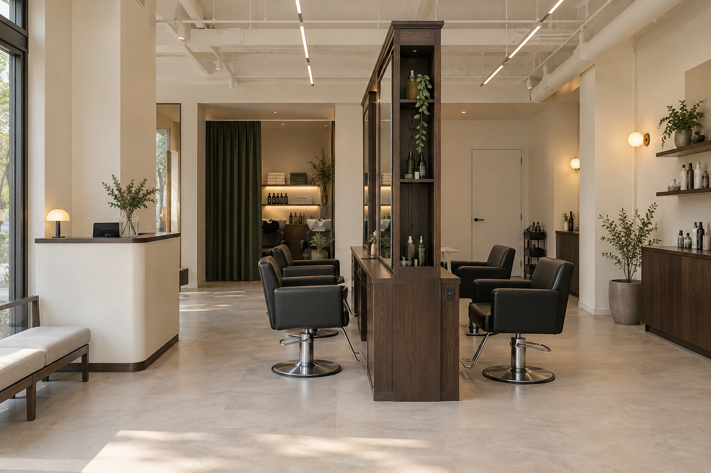
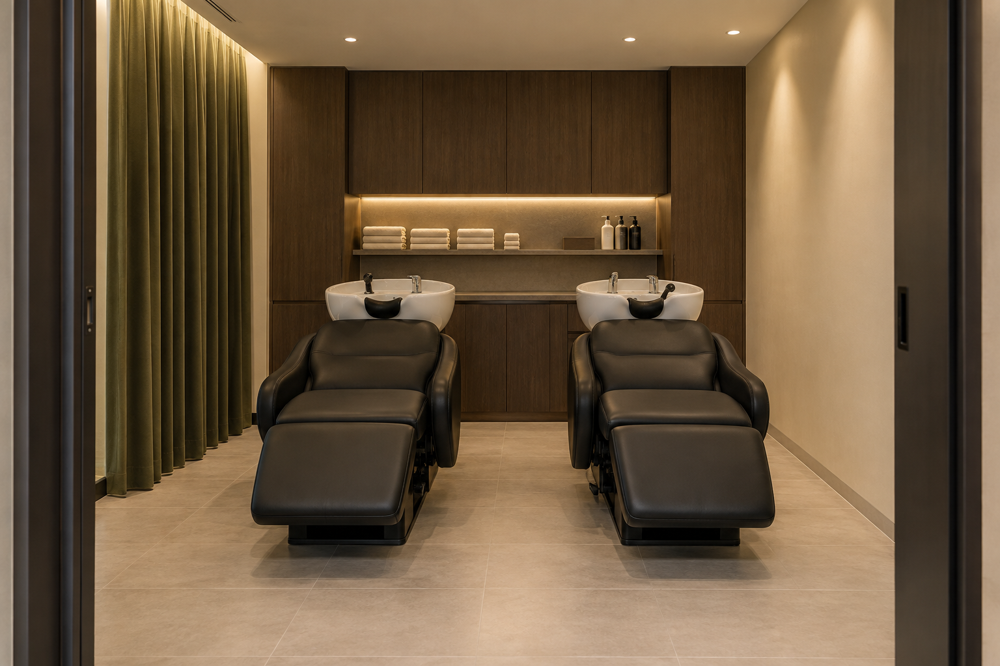

01. 경대가 공간의 중심
공개 사진에서 높은 우드 프레임과 거울이 반복되는 구성이 보입니다. 가구를 단순히 늘어놓기보다 경대의 덩어리와 리듬으로 매장의 인상을 정리한 것으로 읽었습니다.
COMMERCIAL CONCEPT 01 · HAIR SALON
밝은 공간의 중심을 잡는 짙은 우드 경대.
디자인의 인상과 매일의 시술·수납 동선을 함께 설계한 미용실 제안입니다.

REFERENCE REVIEW
비사이드컴퍼니의 ‘여운 살롱’은 경기도 안양의 26평 미용실로 소개되어 있습니다. 원문은 모던·우드톤·그린 포인트를 디자인 키워드로 제시하며, 천장까지 이어지는 큰 경대와 충분한 수납, 앤티크 우드와 블랙 미용 의자의 조합을 설명합니다.
공개 사진에서 높은 우드 프레임과 거울이 반복되는 구성이 보입니다. 가구를 단순히 늘어놓기보다 경대의 덩어리와 리듬으로 매장의 인상을 정리한 것으로 읽었습니다.
밝은 벽·바닥, 화이트 노출 천장이 우드의 무게감을 받쳐 줍니다. 그린 커튼과 블랙 의자는 제한된 색으로 깊이를 더합니다.
경대의 세로 구획과 선반은 거울 주변을 정리하는 요소입니다. 수납을 나중에 추가하기보다 가구의 비례와 함께 계획하는 점을 참고합니다.
사진에서 확인되는 길게 뻗은 조명과 따뜻한 보조 조명은 서로 다른 역할을 합니다. 작업 영역은 밝게, 접수·대기 영역은 편안하게 해석할 수 있습니다.
출처: 비사이드컴퍼니 · 여운 살롱 프로젝트 ↗ · 2026.09.16 확인. 위 시각적 해석은 ROOM PICK의 분석입니다. 원본 사진은 복제·게시하지 않았습니다.
VIRTUAL SHOP A · SPACE PLANNING
전면에 출입구와 쇼윈도가 있는 직사각형 1층 매장을 가정했습니다. 직원 2~3명, 스타일링 4석·샴푸 2석을 기준으로 앞쪽은 접수와 대기, 가운데는 시술, 뒤쪽은 세정과 지원 업무에 배분합니다.
| 영역 | 가상 배분 | 설계 의도 |
|---|---|---|
| 전면 접수·대기 | 깊이 2.5m / 20㎡ | 출입 직후 안내를 받고 대기. 결제 대기와 시술 의자의 후면 동선이 겹치지 않게 분리합니다. |
| 중앙 시술·이동 | 깊이 4.7m / 37.6㎡ | 길이 3m 양면 경대에 앞뒤 두 자리씩 배치. 의자 회전과 작업자·카트 공간을 함께 확보합니다. |
| 후면 샴푸·지원 | 깊이 2.8m / 22.4㎡ | 좌측 샴푸 2석, 우측 준비·세탁·수납. 배관을 뒤쪽으로 모으는 계획입니다. |
면적은 벽 두께를 제외하지 않은 개념 배분입니다. 통로는 계획상 약 1.2m 이상의 여유를 목표로 하되 의자 리클라이닝·작업 반경을 포함해 실측 검증해야 합니다. 법규 적합성을 보증하는 치수가 아닙니다.
DESIGN APPLICATION
짙은 오크톤 프레임, 큰 직사각 거울, 닫힌 하부 수납을 한 모듈로 구성합니다. 전원·드라이어 거치와 배선을 가구 제작 단계에 계획하고, 자주 쓰는 도구만 손이 닿는 위치에 둡니다.
크림 벽과 밝은 회베이지 바닥으로 우드를 돋보이게 합니다. 바닥은 미끄럼·염색약 오염·줄눈 관리, 가구 하단은 청소수와 충격에 대한 내구성을 샘플로 확인합니다.
경대 양측에서 얼굴에 고르게 닿는 작업광을 계획합니다. 강한 역광과 머리 위 그림자를 줄이고, 대기존의 따뜻한 장식 조명은 별도 회로로 조절합니다. 색 재현과 눈부심은 현장 테스트로 정합니다.
그린 커튼은 샴푸존의 시선을 부드럽게 가립니다. 전체를 녹색으로 채우지 않고 우드·크림 중심의 톤을 유지합니다. 커튼은 방음벽이 아니며, 오염 관리와 방염 등 적용 조건은 별도로 확인합니다.

두 체어의 사이와 뒤쪽 작업 여유를 먼저 확인하고 수납 깊이를 정합니다. 깨끗한 타월과 사용 후 타월을 구분하고, 젖은 동선이 접수·대기 구역까지 이어지지 않도록 후면에서 처리합니다.
BEFORE CONSTRUCTION
급배수 위치와 배수 경사, 온수 용량, 누수 대비, 드라이어 동시 사용 전력, 환기·냉난방과 경대 높이의 간섭을 확인합니다.
기둥·보·천장고, 출입구와 피난 동선, 사용 장비의 실제 크기, 화장실 이용 조건, 미용업 관련 영업·소방 요건을 현장과 관할 기준에 맞게 검토합니다.